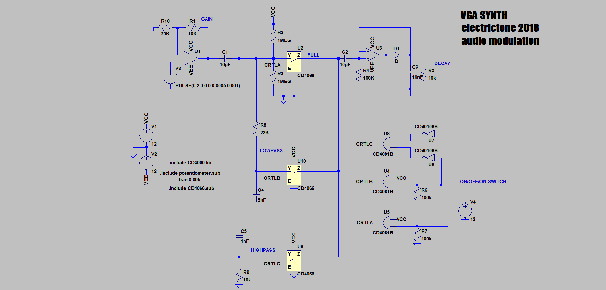

VGA AUDIO MODULATION
a simple envelope follower that tracks the amplitude of the input signal. A switch allows the user to select two filters or the full bandwith signal to drive the peak detector. After the gain stage the signal is AC coupled and biased at 6V for the CD4066 to work properly. Another solution that I used previously is to power the CD4066 with +6/-6V to avoid the additional biasing. In this case, I find it simpler to ac coupled the signal. The digital circuit on the right controls the switching of the analog switches. I could use pin from the microcontroller but this will need ribbon cable to connect the board. This solution is more elegant (although requires more components) and make the board self-sufficient for debugging. Not represented are the input summer that combined the right and left channel, the input gain selector (the circuit must accomodate the modular level (10Vpp), line level (~2Vpp), and headphone output (~100mV)), the 1V clipper at the output. 
{kind=link}